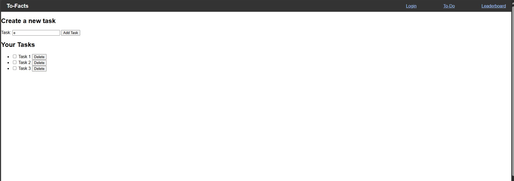

picture of the app while I was making it

To-Facts is an application that gives unique, interesting facts pulled from the internet after the completion of a task. To-Facts helps users to be able to keep track of items on their to-do list while also helping motivate them to complete these items through a reward system that gives an interesting fact upon the completion of a task.